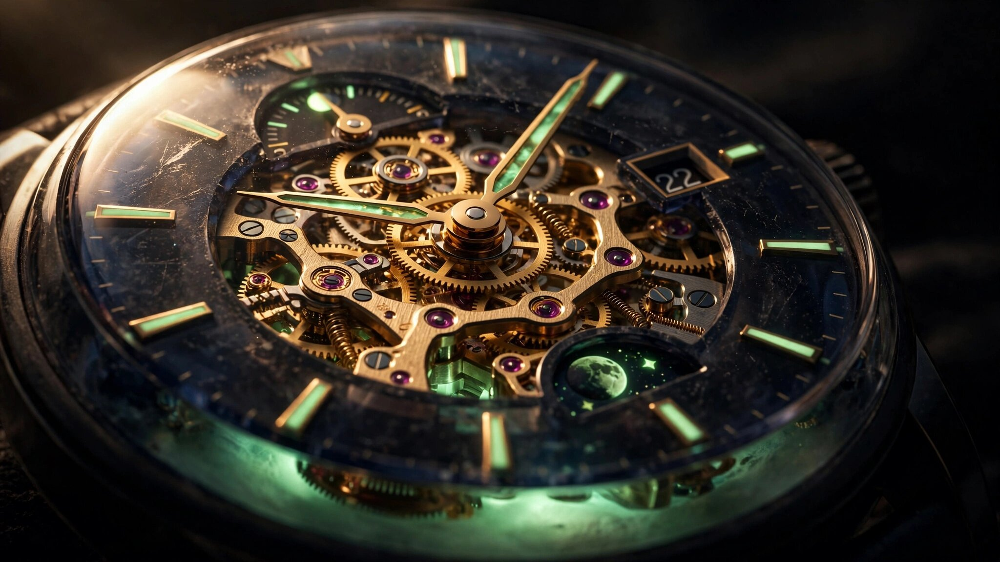

A Dial That Filters Wavelengths: How A. Lange & Söhne Engineered UV-Selective Sapphire to Charge a Perpetual Calendar in the Dark
Not smoked glass. Not a tinted window. A precision optical filter that passes ultraviolet light through two sapphire discs while blocking enough visible wavelengths to keep 685 movement parts hidden in shadow until dark falls, and every calendar indication ignites.

Why Most Luminous Watches Cheat
Luminous watches have a dirty secret. Nearly all of them apply Super-LumiNova or its equivalents to the surfaces directly facing the wearer: hands, hour markers, sometimes a bezel insert. Light hits the compound, excites strontium aluminate crystals doped with europium and dysprosium, and those crystals re-emit photons as a slowly fading glow. It works because the luminous surfaces are exposed, sitting on top of the dial with nothing between them and the ambient light source.
Now consider a perpetual calendar. Its most important indications are printed on rotating discs buried beneath the dial plate: date numerals on tens and units discs, days of the week on a retrograde sector, months on a ring, leap years in an aperture. Coating those hidden components with luminous compound accomplishes nothing if visible light cannot reach them to charge. And cutting windows into the dial to expose them defeats the purpose of having a dial at all.
A. Lange & Söhne's solution, first deployed on the Zeitwerk "Luminous" in 2010 and now in its most ambitious form on the Lange 1 Tourbillon Perpetual Calendar "Lumen," is to make the dial itself an optical filter. Not transparent. Not opaque. Selectively transparent, by wavelength.
Thin-Film Optics on a Watch Dial
Conventional smoked sapphire achieves its dark appearance by reducing overall light transmission uniformly across the spectrum. Less light gets through, period. Everything beneath appears dimmer, and the luminous compound charges poorly because the very wavelengths it needs are attenuated alongside everything else.
Lange's approach is fundamentally different. Both sapphire discs in the Lumen dial carry a multi-layer coating based on titanium oxide (TiO2), a high-refractive-index material widely used in optical thin-film engineering. By controlling layer thickness and composition, Lange's suppliers tune the coating to act as a bandpass filter that favors ultraviolet transmission. Wavelengths below approximately 400 nanometers pass through with relatively little loss. Visible wavelengths above that threshold are selectively attenuated, but not eliminated entirely.
Two consequences follow from this design choice. First, enough UV energy reaches the luminous compound on the calendar discs, date numerals, and moon phase assembly to charge them effectively, even through two intervening layers of coated sapphire. Strontium aluminate phosphors absorb most efficiently in the 350-to-420 nanometer band, and the coating's transmission window is engineered to overlap with exactly that absorption peak. Second, the partial visible-light transmission gives the dial a characteristic depth in daylight. Movement bridges, levers, and wheels are faintly visible beneath, as if viewed through darkened water. Enough structure shows through to reward close inspection without the mechanism appearing bright or cluttered.
Patented in 2013, Lange's system supports unlimited charging cycles because it relies on photoluminescence rather than radioluminescence. No radioactive isotope decays over time. Ambient UV, whether from sunlight, fluorescent lighting, or incidental exposure, replenishes the charge continuously. In practice, a few minutes of bright light stores enough energy for hours of legible glow, though intensity diminishes over time as the phosphor's excited-state electrons relax back to ground state.
Every Indication Glows
Earlier Lumen models applied luminous treatment selectively, to hands and hour markers on a relatively simple dial. On the Lange 1 Tourbillon Perpetual Calendar, selectivity was not an option. Six distinct indication systems needed to glow: the outsize date (tens and units discs), the retrograde day-of-week pointer, the peripheral month ring, the leap year aperture, the moon phase with day/night indicator, and the hour/minute hands and markers.
Each system presented its own engineering problem. On the outsize date, both the tens disc and units disc carry luminous numerals. In darkness, the current date blazes in vivid green while the remaining numerals on each disc, visible through the semi-transparent sapphire, glow more softly. Lange deliberately varied the luminous intensity so the active date dominates the display. Without this gradation, 31 numerals glowing at equal intensity would be illegible.
For the Roman numerals and markers on the hour/minute subdial, luminous material is applied to their undersides rather than their faces. Solid gold applied elements sit on top of the sapphire subdial. Beneath each one, a deposit of luminous compound creates a backlit effect: by day, they read as conventional gold markers against a dark background; by night, green light bleeds around their edges, outlining each numeral in a phosphorescent halo. Laser etching into the subdial surface creates three-dimensional channels for the luminous fill, ensuring uniform light distribution rather than concentrated hot spots.
Similar treatment extends to the leap year indicator at six o'clock. Four numerals rotate on a disc beneath the dial, with the current year shown through a small aperture. In the Lumen version, the active numeral glows prominently while the others remain faintly visible, matching the gradation logic of the outsize date.
A Moon That Knows Day from Night
Lange's most technically ambitious luminous element is the moon phase, and it introduces a complication not found in earlier Lumen references: an integrated day/night indication. Most moon phase displays use a single disc with two identical gold moons, rotating beneath a shaped aperture once every 59 days (approximating two lunar cycles of 29.5 days each). Lange's version adds a second, independently rotating disc beneath the moons that represents the sky.
Driven by the 24-hour wheel, this celestial disc completes one full rotation per day. Half of it is coated to represent a blank, starless sky for daytime. On the other half, the coating is selectively removed to form a star field, with luminous material deposited beneath the glass disc. At night, UV-charged stars appear as scattered points of green light against a darker background. During the day, the starless half produces a uniformly muted backdrop.
Above this sky disc sit two gold moons mounted on a common carrier. Circular surfaces behind the moons are coated with luminous material, so each moon appears backlit in the dark, its crescent or gibbous phase defined by the scallop-shaped aperture that frames it. Accuracy is rated at one day of deviation per 122.6 years, meaning no manual correction is needed within a human lifetime.
Making all of this work beneath a UV-selective dial required stacking three functional layers: the coated sapphire dial on top, the luminous calendar mechanisms in the middle, and the celestial disc assembly at the bottom. Each layer had to charge independently through the layers above it. Lange addressed this by tuning the luminous intensity of deeper components to compensate for cumulative UV attenuation as light passed through successive surfaces.
A Month Ring That Doubles as a Cam
Most perpetual calendars use a 48-month program wheel to encode the varying lengths of months across a four-year leap cycle. It is a large, heavily toothed component that consumes significant real estate beneath the dial. In the Lange 1's asymmetric layout, with its offset subdial and outsize date occupying fixed positions, there was no room for a conventional program wheel without distorting the dial's geometry.
Lange's solution is both mechanical and aesthetic. A peripheral ring around the dial's outer edge displays the current month, driven counterclockwise by a wheel engaging its inner teeth. But this ring is not merely a display. Its upper surface carries a continuous circumferential contour with precisely machined variations in radius, one for each month. A spring-loaded feeler on the grand lever rides this contour, and its radial displacement at each position tells the calendar mechanism how many days to count before advancing.
February produces the deepest inward displacement, triggering the date to advance after 28 days. Months with 30 days sit at an intermediate radius. Months with 31 days sit near the outer edge, allowing the feeler minimal travel. All the information encoded in a conventional 48-month wheel is compressed into the circumferential profile of a single ring that also happens to be the month display.
One detail demands a separate mechanism. Because the peripheral ring encodes only a 12-month cycle, it cannot distinguish leap years from common years on its own. A small cam beneath the leap year disc, completing one rotation every four years, provides that correction. In February, an extended arm of the grand lever contacts this cam. During a leap year, the cam's raised notch prevents the feeler from reaching the full depth of February's contour, reducing its travel by exactly the amount needed to count 29 days instead of 28.
All calendar indications switch instantaneously at midnight. Energy for this changeover accumulates progressively throughout the day via two separate cam-and-spring systems. One stores energy for the daily date, day, and moon phase advance. A second, dedicated to the month ring, must overcome greater inertia because the ring is physically larger and heavier than internal discs. At midnight, both springs release simultaneously, driving every indication forward in a single impulse. Calibrating the spring tensions, cam geometries, and lever travels so that this happens cleanly, without stalling or overshooting, is one of the most demanding assembly challenges in high horology.
685 Parts, Redesigned from Scratch
Calibre L225.1 is not a modified version of the L082.1 that powered the original Lange 1 Tourbillon Perpetual Calendar in 2012. It is a clean-sheet design incorporating several structural changes motivated by both functional and aesthetic goals.
Most significantly, the gear train has been rearranged to increase the visibility of the tourbillon through the exhibition caseback. In the earlier calibre, a finishing wheel drove the cage pinion from one side. That cage pinion then drove an intermediate wheel, which in turn drove the small seconds pinion on the opposite side. Both the finishing wheel and intermediate wheel partially overlapped the tourbillon cage, obscuring it. Calibre L225.1 reverses the logic. An intermediate wheel is driven directly by the train, and from there drives both the cage pinion and the seconds pinion. Fewer wheels cross over the cage, leaving it more fully visible.
Self-winding is handled by a bidirectional rotor in 18-karat white gold with a platinum outer rim for inertial mass. Earlier Lange automatic calibres used yellow gold rotors. Here, the rotor receives black rhodium plating, matching the Lumen's dark aesthetic while maintaining the density platinum provides for efficient winding in both directions. Power reserve stands at 50 hours at a beat rate of 21,600 vibrations per hour (3 Hz), driving a balance with a free-sprung configuration.
Stopping a Tourbillon
Tourbillons, by design, never stop rotating. A one-minute tourbillon cage completes 1,440 rotations per day, and its continuous motion is the entire point: averaging out gravitational rate errors across all vertical positions. But this creates a practical problem. Pulling the crown to set the time should halt the seconds hand so the wearer can synchronize to a reference clock. In a conventional watch, a brake lever touches the balance wheel, stopping it. In a tourbillon, stopping the balance means stopping something that is itself rotating inside a rotating cage.
Lange's patented stop-seconds mechanism, granted in 2008, uses a V-shaped arresting spring. When the crown is pulled, this spring moves toward the balance wheel inside the rotating cage. If one arm of the V encounters a cage pillar (because the cage's angular position at that instant places a pillar in the spring's path), the spring pivots, allowing the other arm to reach past the obstruction and contact the balance rim. Regardless of where in its rotation the cage happens to be when the crown is pulled, one arm or the other will find the balance and stop it. Release the crown, and the balance restarts immediately, resuming its oscillation without requiring external energy beyond the mainspring's stored torque.
Fewer than a dozen tourbillon manufacturers worldwide offer a reliable stop-seconds function. Most avoid the problem entirely, because the tolerances required to insert a braking mechanism inside a rotating cage without interfering with normal operation are extraordinarily tight. Lange's V-spring solution is elegant precisely because it adapts to the cage's position rather than requiring the cage to be in a specific orientation when the brake engages.
Two Materials, Two Finishing Philosophies
Visible through the caseback, Calibre L225.1 presents an unusual mix of German silver bridges and black-polished steel cocks for the tourbillon and intermediate wheel. Lange's finishers handle each material differently, and the contrast between them reveals something about the nature of hand-finishing at this level.
German silver (an alloy of copper, nickel, and zinc, containing no actual silver) is relatively soft. Its beveled edges, the anglage that Lange is celebrated for, begin with rubberized abrasive tools of progressively finer grit that remove machining marks without cutting aggressively. Final polishing uses a rotating brush charged with fine compound. Angles can be shaped gradually, and mistakes are forgiving because the material yields to pressure before scoring.
Steel is harder, and the finishing technique changes accordingly. Black-polished steel cocks are brought to a mirror finish using rotating wooden wheels charged with abrasive compound. Each internal angle must be formed individually, with the finisher guiding the edge of the component into the spinning wheel by hand. Inward points demand particular care: the finishing must continue cleanly into each acute angle and terminate without overrun. Given the openworked shapes of these cocks, with their numerous internal angles, this is hours of concentrated handwork per component.
Hand-engraved solarization and star motifs decorate the tourbillon cock and intermediate-wheel cock, completed by a dedicated engraver using a burin. These are not machine-stamped patterns. Each ray of the solarization fans outward at a slightly different angle, and each star is individually cut. Because the cocks are steel rather than the softer German silver Lange typically engraves, the engraver must apply considerably more force while maintaining the same precision. A slip on hardened steel cannot be corrected.
What €530,000 Buys and What It Does Not
All 50 pieces sold before the watch reached authorized dealers. At more than half a million euros, this is not a purchase driven by horological need. No one requires a perpetual calendar that glows. Quartz watches tell more accurate time. Smartphone calendars never need correcting.
What the price reflects is the convergence of problems that had to be solved simultaneously. Optical thin-film engineering to create a UV-selective dial. Luminescent chemistry to ensure charge reaches buried calendar discs through multiple intervening layers. A cam-encoded peripheral month ring that eliminates the conventional program wheel. Instantaneous midnight switching of every calendar indication. A tourbillon with stop-seconds. A clean-sheet 685-part calibre. And finishing in two fundamentally different materials, each demanding its own technique, each executed entirely by hand.
None of these problems is individually unprecedented. Optical coatings are routine in industrial optics. Luminous compounds are commodity materials. Peripheral month rings have appeared on Lange perpetual calendars since 2012. But integrating all of them into 41.9 millimeters of platinum, without any single solution compromising another, is the kind of systems engineering that justifies the word "manufacture" in its original French sense: made by hand.
Honesty also requires noting the limits. Fifty hours of power reserve is modest for a modern automatic movement. Three hertz is a conservative beat rate that sacrifices some positional stability compared to high-beat alternatives. And luminous intensity inevitably fades over a few hours of darkness, so the full nocturnal effect is vivid at bedtime but ghostly by dawn. Lange does not pretend otherwise. These are engineering trade-offs made to accommodate the movement's complexity within a wearable case height of 13 millimeters.
| Specification | Lange 1 Tourbillon Perpetual Calendar "Lumen" |
|---|---|
| Reference | 720.035FE |
| Calibre | L225.1 (manufacture, automatic) |
| Components | 685 |
| Beat rate | 21,600 vph (3 Hz) |
| Power reserve | 50 hours |
| Functions | Hours, minutes, subsidiary seconds; tourbillon with stop-seconds; perpetual calendar with instantaneously switching outsize date, retrograde day, peripheral month ring, leap year; moon phase with day/night indication |
| Case | 41.9 mm × 13.0 mm, 950 platinum |
| Dial | Semi-transparent sapphire crystal with TiO2 coating; all displays luminous |
| Rotor | 18K white gold, black rhodium plated, platinum outer rim |
| Moon phase accuracy | 1 day deviation per 122.6 years |
| Strap | Hand-stitched black alligator leather, 950 platinum deployant buckle |
| Production | Limited to 50 pieces |
| Price | €530,000 |
Sources
- A. Lange & Söhne. "Lange 1 Tourbillon Perpetual Calendar 'Lumen'." Official press release, Watches & Wonders 2026.
- Revolution Watch. "A Closer Look: A. Lange & Söhne Lange 1 Tourbillon Perpetual Calendar 'Lumen'." revolutionwatch.com, May 2026.
- Escapement Magazine. "A. Lange & Söhne Lange 1 Tourbillon Perpetual Calendar 'Lumen' Watch Review." escapementmagazine.com, June 2026.
- DMARGE. "A. Lange & Söhne Brought Two Calendars to Geneva, and They're Playing Completely Different Games." dmarge.com, April 2026.
- Swiss Watches Magazine. "The New Lange 1 Tourbillon Perpetual Calendar Lumen." swisswatches-magazine.com, April 2026.
- Time and Tide Watches. "A. Lange & Söhne Lange 1 Tourbillon Perpetual Calendar Lumen | Introducing." timeandtidewatches.com, April 2026.
- Flaunt Magazine. "A. Lange & Söhne Presents Lange 1 Tourbillon Perpetual Calendar 'Lumen'." flaunt.com, 2026.